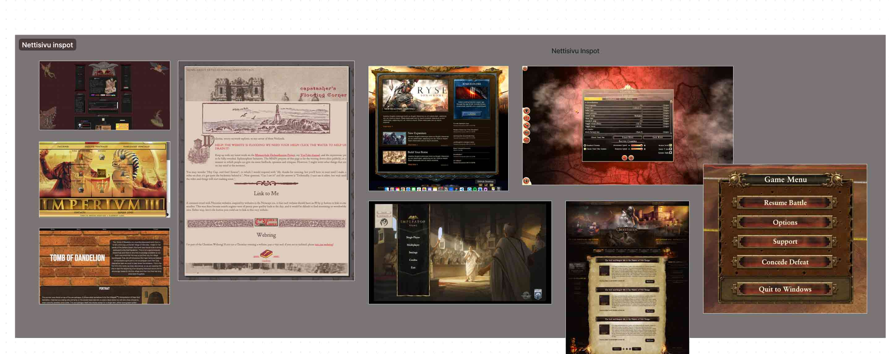
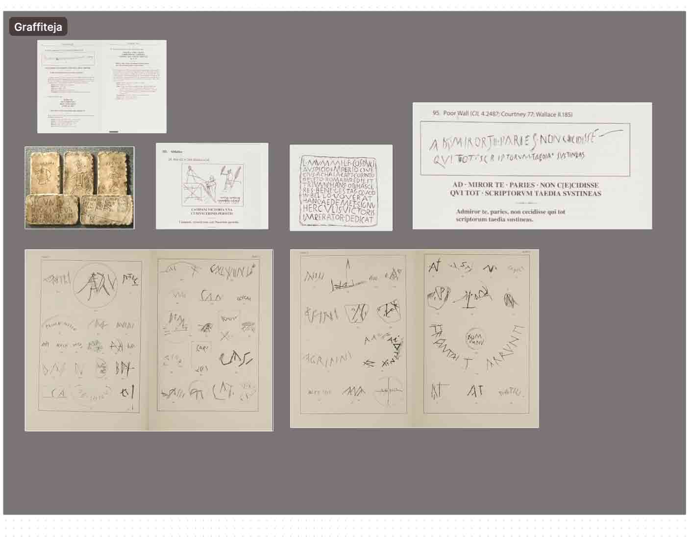
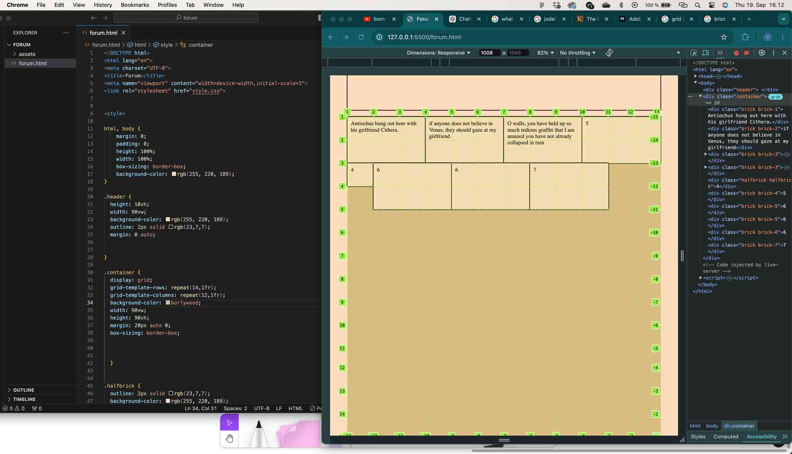
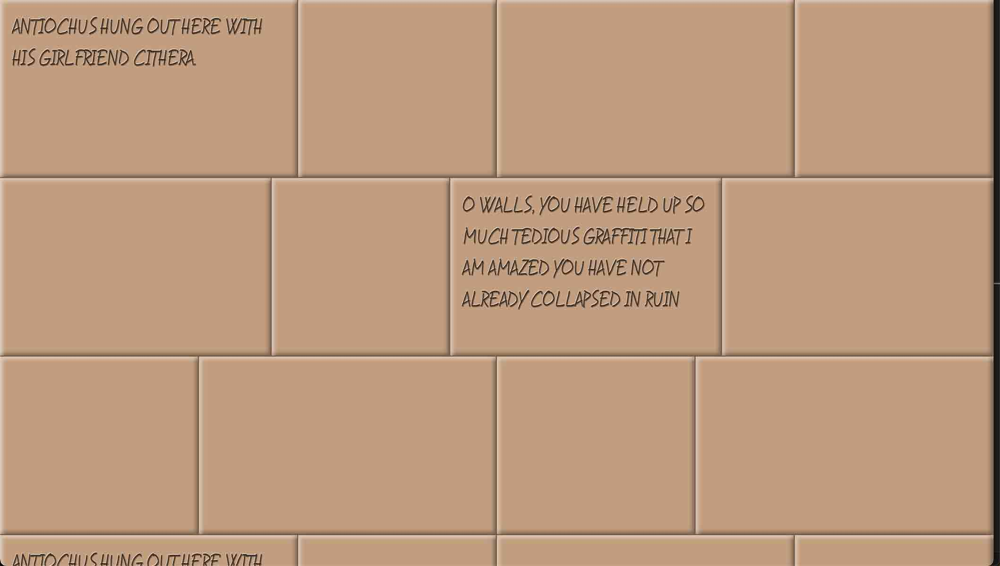
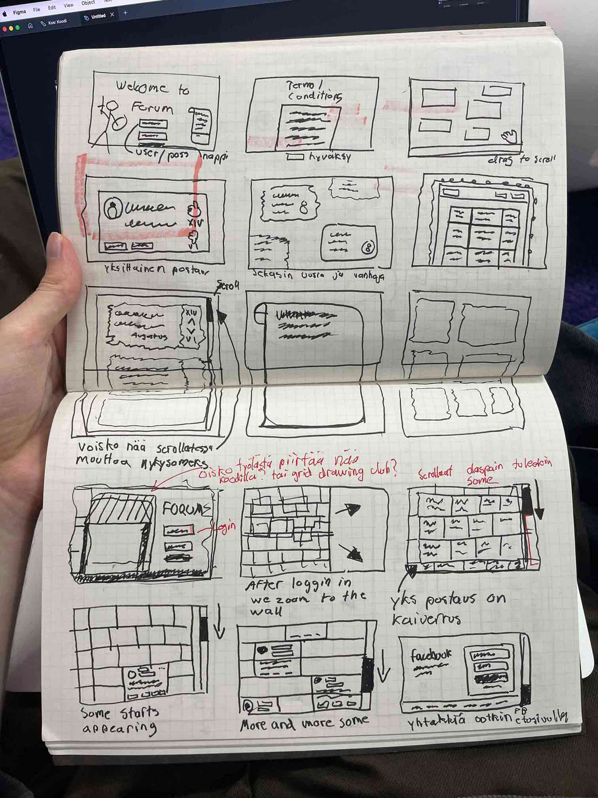
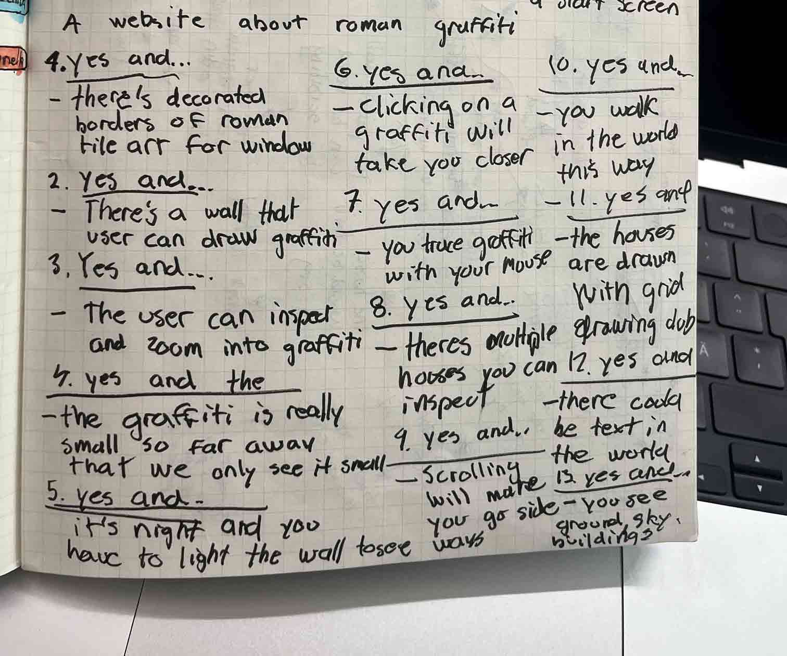

Etsin netistä erilaista visuaalista inspiraatiota, joka voisi toimia roomalaisideani kanssa. Kahlasin läpi esimerkkejä neocitiesistä nettisivuja joiden aihepiiriin kuului historia tavalla tai toisella.Tuli myös mieleen erilaiset historialliset strategiapelit ja niiden käyttöliittymät, sekä alkuperäiset kuvat roomalaisten kaivertamista graffiteista. Tutkailin ja keräsin myös esimerkkejä roomalaisista taloista.
 Päivä meni käytännössä ensimmäisen prototyypin rakentamiseen konseptista. Homma eteni aika hitaasti sillä vasta nyt lähdin ekaa kertaa oikeasti rakentamaan jotain koodin avulla. Rakensin youtube tutoriaaleja seuraamalla display:grid ja sitten display:flex asetuksilla ensimmäisen näkymän. Huomasin kyllä taas kerran sen, että opin parhaiten koodaamista tekemällä itse.

Käytännössä suunnitelmanani oli koodata tiiliseinä, jossa tiilit näyttäisivät mahdollisimman luonnolliselta, vaihtaen hieman kappaleiden kokoa ja sijaintia rivi riviltä. Tiilien sisällä taas olisi kaiverruksen näköisellä fontilla graffiteja, joita antiikin rooman aikana eläneet ihmiset olivat kirjoittaneet. Sain toteutuksen koodattua ihan onnistuneesti, en vaan lainkaan ollut tyytyväinen konseptiin. Se oli mielestäni, noh, tiiliseinä. Huomasin, että omalla kohdalla html ja css kokemuksen puute vaikutti siihen, minkälaisia konsepteja keksin. En uskaltanut lähteä tekemään liian vaikeaa toteutusta, jota en saisi kurssin raameissa aikaiseksi.

Koitin miettiä tapoja vähän tuoda lisää mielenkiintoa toteutukseen ja keksin, että ehkä tiilit voisivat alas scrollatessa vaihtua pikkuhiljaa visuaaliselta tyyliltään somepostauksien näköiseksi. Toinen idea oli tehdä gradient, ja että tiili seinä muuttuisi gradientin avulla joksikin sosiaalisen median etusivuksi. Tein pieniä kokeiluja, mutta en innostunut niistä yhtään. Palasin siis taas suunnittelupöydälle.

Tuli projektin työstäessä mieleen yleisesti nettisivujen ja muiden digitaalisten asioiden, kuten videopelien, suunnitteluprosessi. Olin nähnyt joskus ihmisten suunnittelutekniikoita, joita he olivat käyttäneet GameJam tapahtumissa, jossa pitää kehittää jokin peli lyhyessä ajassa. GameJamin konsepti on aina kiehtonut minua ja mietin, että ehkä samalainen tyyli voisi sopia hyvin nettisivujen suunnittelussn. Tästä inspiroituneena aloin tutkimaan aihetta lisää, ja löysin sattumalta ideointikonseptin nimeltä “Yes, and..”, jossa koitetaan pitää ideointiprosessissa mielikuvitus avoinna ja hauskuus mukana. Tekniikka tuntui toimivan ja keksin hauskoja ideoita, monia niitä kuitenkin vaivasi se, että niiden toteuttaminen vaatisi javascriptiä, jota halusin välttää tässä vaiheessa.

Yksi idea, joka jäi mieleen pyörimään oli sivuttainen scrollaus, ja pienen testailun jälkeen sain selville, että se olisi suht helppo toteuttaa html ja css avulla. Mietin, että voisin tehdä nettisivuni sivuttaisessa muodossa. Taustalla olisi roomalaisen kaupungin maisemaa ja käyttäjä kulkisi sen kaduilla eteenpäin scrollaamalla. Näkisimme roomalaisten tiilitalojen seinällä pienellä jotain graffitia, ja hiiri olisi ikäänkuin suurennuslasi, jonka hoverilla viereen aukeasi ikkuna, jossa olisi graffiti luettavana isommassa koossa. Tämä idea toistaiseksi vaikutti ainakin innostavalta, ehkä hieman jännittää, että kerkeänkö sen toteuttaa. Jotain pitäis saada tehtyä.